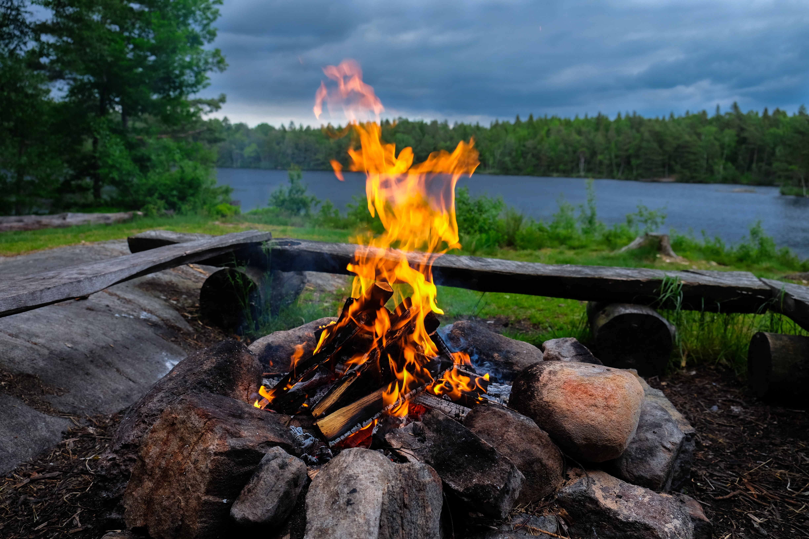
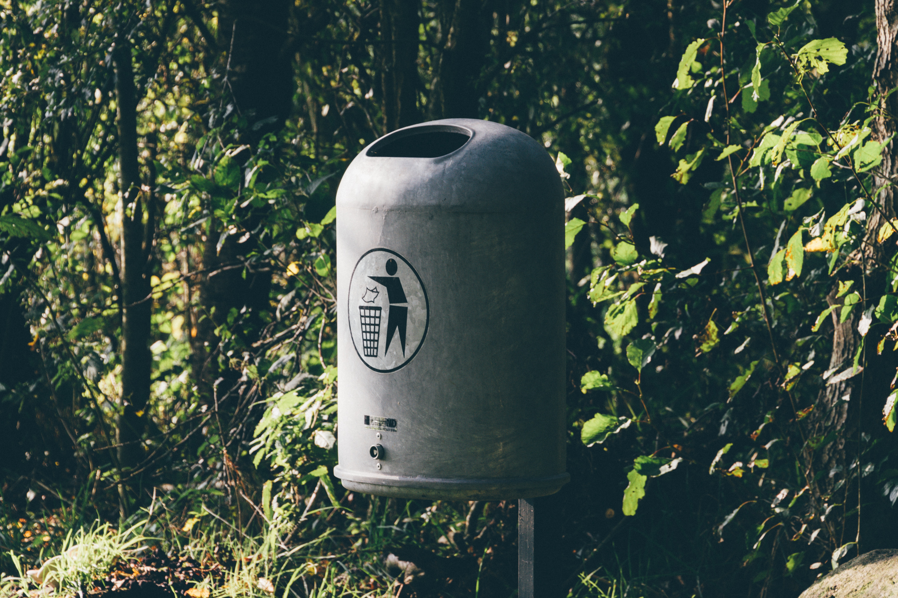

Retkeilyn ABC
1. Kunnioita luontoa
Kunnioita luontoa - älä muuta sitä.
Pidä lemmikit kytkettynä.

2. Suosi merkittyjä reittejä
Suosi merkittyjä reittejä ja noudata eri liikumistapoja koskevia sääntöjä. Tarkista retkikohteesi liikkumisrajoitusalueet ja -ajat.

3. Leiriydy vain sallituille paikoille
Leiriydy vain sallituille paikoille. Älä tiskaa tai peseydy suoraan vesistössä. Noudata autiotupien sääntöjä.

4. tee tulet vain sallituille paikoille
Tee tulet vain sallituille paikoille, suosi retkikeitintä. Älä tee tulta metsä- tai ruohikkopalovaroituksen aikana.
5. Älä roskaa
Älä roskaa, vaan vie roskat mukanasi asianmukaiseen jätepisteeseen.
